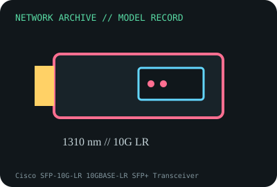

[ MODEL-SPECIFIC NETWORK HARDWARE RECORD ]
Cisco SFP-10G-LR 10GBASE-LR SFP+ Transceiver
1310nm long-reach 10GbE SFP+ over single-mode fiber. Specifications are tied to this named product; confirm the physical label, revision and source documentation.

IDENTIFICATION: Verify exact PID/model, revision, label and host support. The catalog separates nominal PHY/link specifications from measured throughput; no benchmark is asserted unless explicitly recorded.
Model-specific specifications and compatibility
| Subcategory | SFP transceivers: optical and copper |
|---|---|
| Exact product/model | Cisco SFP-10G-LR 10GBASE-LR SFP+ Transceiver |
| Bus, ports and physical interface | Hot-pluggable SFP+ with duplex LC connector; compatible host 10GbE SFP+ port required. |
| PHY, radio or optical interface | 10GBASE-LR at 1310nm over single-mode fiber; Cisco specifies reach up to 10km. Verify attenuation, dispersion and end-to-end optical budget. |
| Nominal rate (not measured) | 10Gb/s nominal Ethernet link rate; 10km is a qualified channel reach limit, not an observed transfer rate. |
| Measured throughput | No optical/throughput measurements are claimed. Record power values, fiber path, splice/connector losses and peer module for any measurement. |
| Driver, OS and firmware | No OS NIC driver; Cisco platform firmware and exact transceiver compatibility matrix determine whether the SFP+ is supported and DOM data exposed. |
| Platform/media compatibility | Single-mode fiber with duplex LC and matching 1310nm LR peer. Not for arbitrary multimode links; avoid short-link receiver overload and check launch/receive budget. |
| Variant warning | SFP-10G-LR differs from LR-S, LR-X and third-party-coded optics. Check exact PID, temperature grade, DOM and host compatibility; connector appearance alone does not prove interoperable PHYs. |
Revision, operation and measurement notes
SFP-10G-LR differs from LR-S, LR-X and third-party-coded optics. Check exact PID, temperature grade, DOM and host compatibility; connector appearance alone does not prove interoperable PHYs.
No OS NIC driver; Cisco platform firmware and exact transceiver compatibility matrix determine whether the SFP+ is supported and DOM data exposed.
No optical/throughput measurements are claimed. Record power values, fiber path, splice/connector losses and peer module for any measurement.
Archival, ESD and preservation notes
Preserve labels and pair identity, record DOM readings and port firmware, cap both ends and use fiber end-face inspection. Store module in ESD-safe case.
Retain source provenance and the revision/date of each supporting document. Store public records without credentials, personal information or other secrets.
Primary manufacturer and standards sources
- Cisco 10GBASE SFP+ modules data sheetPrimary manufacturer or standards reference; confirm exact part label, revision, and platform qualification.
- Cisco transceiver compatibility matrixPrimary manufacturer or standards reference; confirm exact part label, revision, and platform qualification.
- IEEE 802.3 Ethernet standardsPrimary manufacturer or standards reference; confirm exact part label, revision, and platform qualification.
Manufacturer source links are provided for the stated model or exact product family; use the board label and the official revision-specific compatibility list for final qualification.